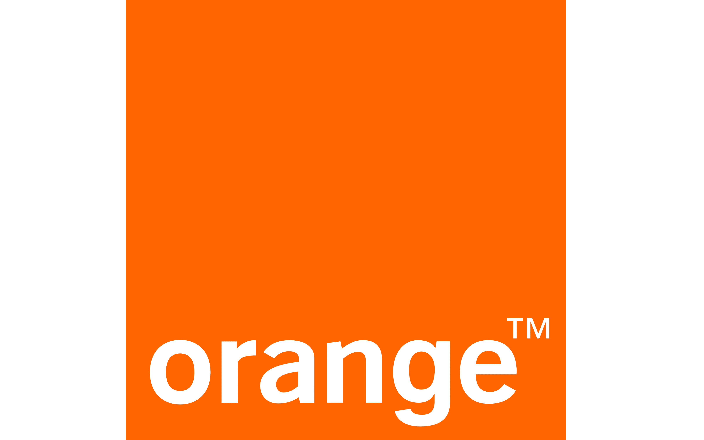

Alternance · Depuis septembre 2025
Pilote d'activité
Orange PPC OI
Dans le cadre de mon BTS SIO SISR, j'effectue mon alternance chez Orange PPC OI en tant que pilote d'activité.
Cette expérience me permet de découvrir le fonctionnement d'un grand acteur des télécommunications et d'évoluer dans un environnement professionnel lié aux infrastructures et aux services réseau.
Mon environnement professionnel
- Suivi et coordination des activités.
- Découverte des environnements liés à la fibre optique.
- Observation des activités de supervision.
- Découverte des activités liées au support réseau.
- Développement de mon organisation et de ma communication professionnelle.